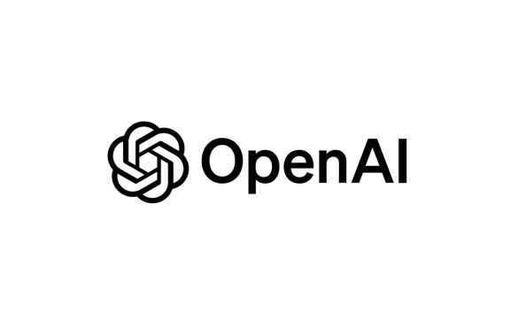

Un Generador de Artículos para Blogs con formato Markdown usando GPT-4 Turbo#

Hace poco se me ocurrió, en vista a que Ider Delzo y yo decidimos crear este blog, crear un script en Python para que autogenere un review de un video en YouTube usando nada menos que el API de GPT-4 Turbo de OpenAI.
Para lograr esto, primero tuve que buscar una librería de Python que me permitiera descargar el transcript del video de YouTube para usarlo como fuente de información para ser procesada luego por GPT-4 Turbo. Justamente, youtube-transcript-api fue la solución perfecta para realizar esta tarea inicial. Así que usando una lógica como la que señalo más abajo se puede descargar el transcript y transformarlo en formato de cadena para ser leido después por GPT-4 Turbo.
from youtube_transcript_api import YouTubeTranscriptApi
class KnownError(Exception):
pass
def get_video_id(video_url):
video_ids = parse_qs(urlparse(video_url).query).get('v')
if video_ids is None:
raise KnownError(
"Missing `v` querystring variable in YouTube video URL."
)
return video_ids[0]
def main():
transcript = "\n".join(
[
t["text"]
for t in YouTubeTranscriptApi.get_transcript(get_video_id(url))
]
)
print(transcript)
if __name__ == "__main__":
main("https://www.youtube.com/watch?v=yzCitT4juGk")
Nota
Este snippet de código imprimirá en la terminal el transcript del video de YouTube que se le pasa a la función main().
Luego, usando el API de OpenAI para comunicarse con el model GPT-4 Turbo y procesar el transcript, inicializamos el objeto cliente de OpenAI y con este podemos acceder a la función chat.completions.create() del cliente para comunicarnos con el modelo y así obtener el resultado esperado. A continuación muestro un snippet de código empleando este mecanismo.
import os
from openai import OpenAI
from youtube_transcript_api import YouTubeTranscriptApi
class KnownError(Exception):
pass
def get_video_id(video_url):
video_ids = parse_qs(urlparse(video_url).query).get('v')
if video_ids is None:
raise KnownError(
"Missing `v` querystring variable in YouTube video URL."
)
return video_ids[0]
def main(url):
transcript = "\n".join(
[
t["text"]
for t in YouTubeTranscriptApi.get_transcript(get_video_id(url))
]
)
# Usar la variable de entorno OPENAI_API_KEY para poner la llave del API de
# la plataforma OpenAI
client = OpenAI(api_key=os.environ.get("OPENAI_API_KEY"))
stream = client.chat.completions.create(
model="gpt-4-turbo-preview",
messages=[
{
"role": "user",
"content": f"""
Escribe un review en Markdown del transcript de un video de YouTube siguiente
(obvia los guiones). El video podría estar en un idioma X.
El artículo final tiene que estar en el idioma Español:
---
{transcript}
---
"""
},
],
stream=True,
)
for chunk in stream:
print(data, end="")
fd.write(data)
print("")
if __name__ == "__main__":
main("https://www.youtube.com/watch?v=yzCitT4juGk")
Esto es básicamente lo que hace el script solo que de manera más elaborada usando flags para añadir parámetros al programa y Jinja2 como procesador de plantilla del texto que se le envía al modelo.